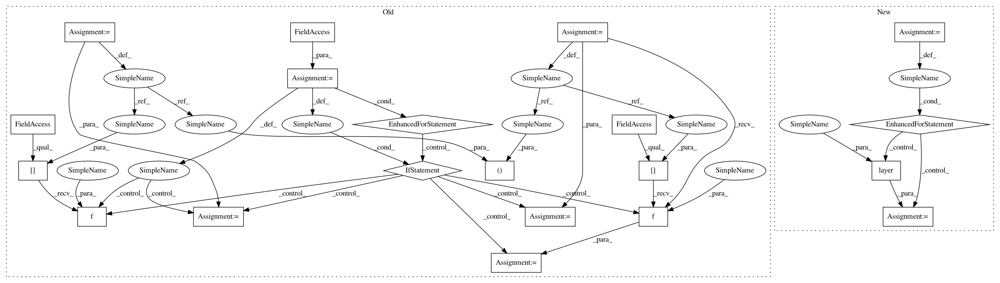

7958b7a684f8819c95106a768e44cd37df226310,batchflow/models/eager_torch/layers/conv_block.py,ConvBlock,forward,#ConvBlock#Any#,271
Before Change
def forward(self, x):
b_counter, s_counter, c_counter = 0, 0, 0
residuals = []
for letter in self.module_layout:
if letter == "_":
x = self.block_modules[b_counter](x)
b_counter += 1
elif letter in self.SKIP_LETTERS:
residuals += [self.skip_modules[s_counter](x)]
s_counter += 1
elif letter in self.COMBINE_LETTERS:
x = self.combine_modules[c_counter]([residuals.pop(), x])
c_counter += 1
return x
def fill_layer_params(self, layer_name, layer_class, inputs, counters):
After Change
self._make_modules(inputs)
def forward(self, x):
for r in range(self.n_repeats):
branch_outputs = [layer(x) for layer in self.group_modules[r]]
x = self.combine_modules[r](branch_outputs) if self.n_branches > 1 else branch_outputs[0]
return x
def _make_modules(self, inputs):
In pattern: SUPERPATTERN
Frequency: 3
Non-data size: 20
Instances
Project Name: analysiscenter/batchflow
Commit Name: 7958b7a684f8819c95106a768e44cd37df226310
Time: 2019-11-26
Author: Tsimfer.SA@gazprom-neft.ru
File Name: batchflow/models/eager_torch/layers/conv_block.py
Class Name: ConvBlock
Method Name: forward
Project Name: analysiscenter/batchflow
Commit Name: a968bc8ae127d1e3833c2fa468858f9c48f6923c
Time: 2020-02-10
Author: Tsimfer.SA@gazprom-neft.ru
File Name: batchflow/models/torch/encoder_decoder.py
Class Name: EncoderModule
Method Name: forward
Project Name: analysiscenter/batchflow
Commit Name: a968bc8ae127d1e3833c2fa468858f9c48f6923c
Time: 2020-02-10
Author: Tsimfer.SA@gazprom-neft.ru
File Name: batchflow/models/torch/layers/conv_block.py
Class Name: BaseConvBlock
Method Name: forward
Project Name: analysiscenter/batchflow
Commit Name: 7958b7a684f8819c95106a768e44cd37df226310
Time: 2019-11-26
Author: Tsimfer.SA@gazprom-neft.ru
File Name: batchflow/models/eager_torch/layers/conv_block.py
Class Name: ConvBlock
Method Name: forward